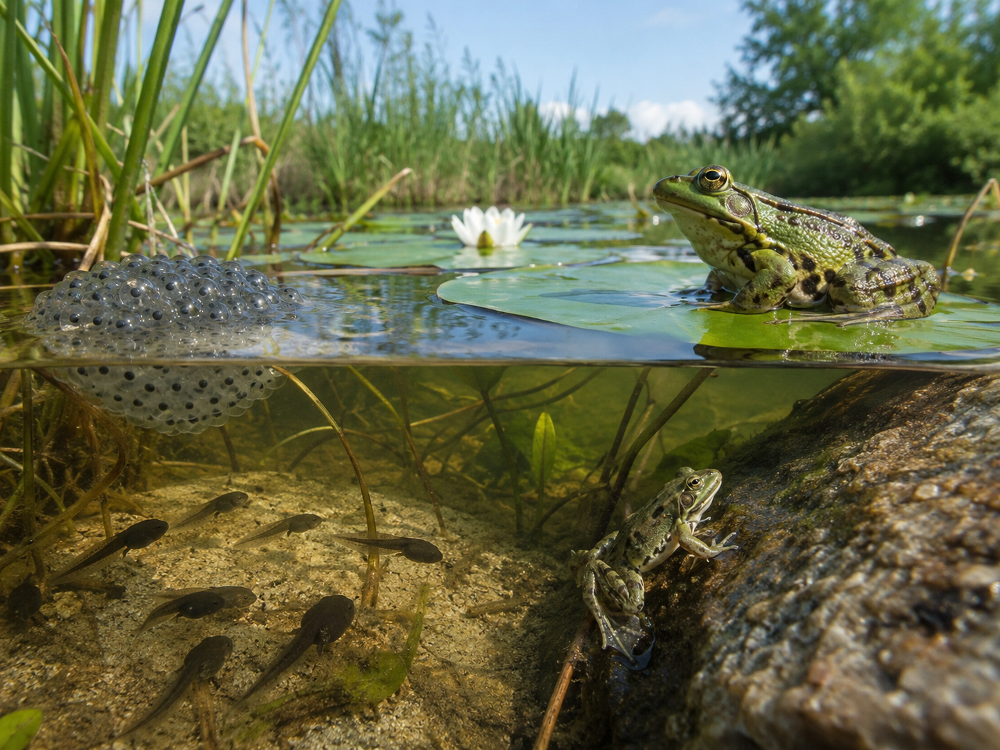

Keep this question in mind as you work through the lesson. By the end, you should have some real ideas about it!
Look closely at the photo in the Lesson tab — it shows something remarkable. In one pond, you can see several stages of a frog's life happening all at once. Before we talk about any of that, just look.
There are no wrong observations here. Scientists always start by looking carefully. We'll come back to your question at the end of the lesson.
These are the words scientists use when they study how animals grow and change. Tap each card to flip it and read the definition. You'll see these words throughout the lesson.
Copy this sentence carefully into your science notebook:
"All animals go through a life cycle — they are born, they grow, and they reproduce."

Every animal goes through a series of changes as it lives. Scientists call this pattern a life cyclelife cycleThe stages an organism goes through as it grows and changes.. Most life cycles follow the same basic steps: an organism is born or hatches, it grows, it becomes an adult, and eventually it can reproducereproduceTo make offspring so the life cycle continues.. When an adult reproduces, the cycle starts again for the next generation.
Think about the frog photo above. Those tiny dots are eggs. Those swimming shapes are tadpoles. That frog on the lily pad is a full-grown adult. The same life cycle — just at different points in the story.
Not all animals change the same way. A frog starts as an egg, hatches into a tadpole that swims underwater, then slowly grows legs, loses its tail, and becomes a frog that can live on land. A butterfly goes through something similar — egg, caterpillar, chrysalis, then adult. This kind of dramatic body change is called metamorphosismetamorphosisA dramatic change in body shape as an animal grows..
A dog grows differently. A puppy is born looking like a small dog — it gets bigger and stronger, but its basic body shape stays the same. No gills. No tail-to-lose. Just a puppy growing into an adult.
At every stagestageOne step in the growth of a living thing., animals need resourcesresourceSomething an animal needs to survive — like food, water, or shelter. to stay alive. Resources include food, water, air, and shelter. Without them, an animal may not make it to the next stage.
A tadpole needs clean water, tiny algae to eat, and hiding spots to stay safe from predators. When it becomes a frog, those needs change — it now breathes air and hunts insects on land.
Real-World Connection: The pond in the photo above is a complete habitat. Every resource a frog needs — at every stage of its life — is right there in one place.
All animals share the same basic life cycle: birth, growth, and reproduction. But how they change can look very different. Frogs and butterflies go through metamorphosis — a dramatic body change at each stage. Dogs and birds grow larger while keeping the same basic shape.
Curious? Go Deeper
Two kinds of metamorphosis. Butterflies, frogs, and beetles go through "complete metamorphosis" — four very different stages where the animal looks nothing like its final form until the last step.
Dragonflies, grasshoppers, and crickets go through "incomplete metamorphosis." They hatch looking like tiny versions of the adult and simply grow larger with each molt. Scientists call these young insects "nymphs."
Here's something worth thinking about: a tadpole breathes through gills, swims with a tail, and eats algae. The adult frog breathes with lungs, jumps with legs, and hunts live insects. Same animal. Completely different body. That might be the most dramatic transformation in all of nature.
You'll need: science notebook, pencil, and colored pencils. Pick one animal and keep it in mind the whole way through.
You've seen how a frog changes. Now choose an animal and map its life cycle yourself. Use what you learned from the lesson and the diagram.
Pick your animal: Choose one — frog, butterfly, or dog. Write its name at the top of a blank page in your notebook. You can also choose another animal if you know its life cycle stages.
Draw the stages: Make a large circle on the page and divide it into sections — one for each stage. Draw a simple picture inside each section showing what the animal looks like at that point.
Label each stage: Write the name of the stage next to each drawing. Add arrows showing which direction the cycle moves.
Add resources: Next to each stage, write one thing the animal needs at that point — food, water, shelter, or something specific. What does it need right then to survive?
In your science notebook, answer these prompts. Use the name of your animal and be specific about what you drew or noticed.
Tell the story of your animal's life cycle from beginning to end — what it looks like at each stage, what it needs, and how it changes. Use the names of the stages in your story.
Think through each question carefully. Write your answers in your notebook before moving on.
🔍 Part A — Label the Life Cycle
In your science notebook, draw a frog life cycle with 4 stages in a circle. Use the diagram from the Lesson tab to help you.
🚀 Part B — Short Answer
Answer each question in complete sentences. Use your vocabulary!
Why do you think some animals change dramatically as they grow, while others just get bigger?
What do you think?
💡 Start with: "I think some animals change dramatically because…"
What did you observe or learn that supports your thinking?
💡 Start with: "I know this because when I looked at the photo / when I learned about…"
Why does that make sense?
💡 Start with: "This makes sense because…"
📚 Try to use at least one of these in your answer: life cycle, metamorphosis, stage
🎨 Part C — Draw & Compare
In your notebook, draw two animal life cycles side by side — one that goes through metamorphosis and one that does not. Label every stage and add arrows showing the direction the cycle moves.
Submit your work on Canvas using one of these options:
Check off everything before you submit: